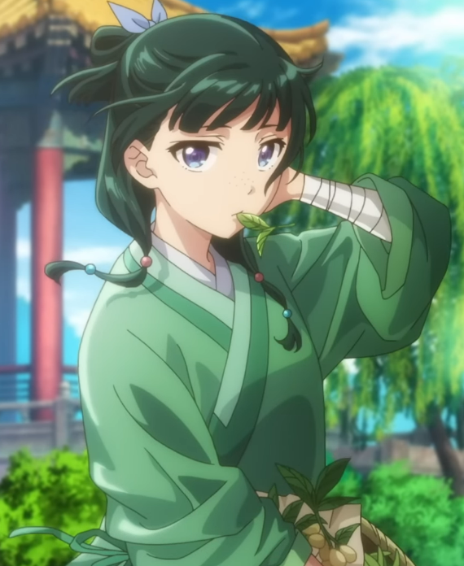
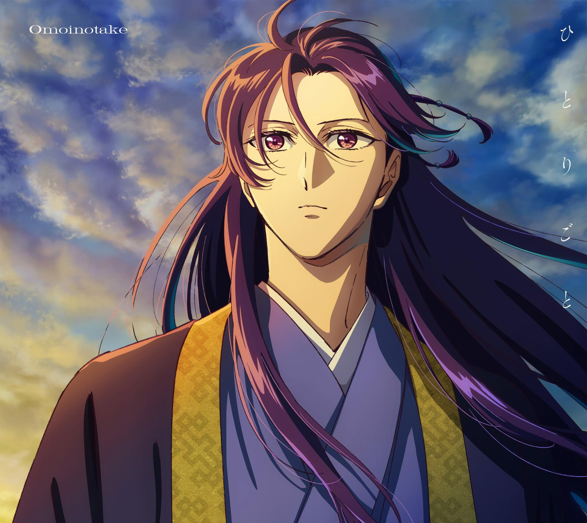
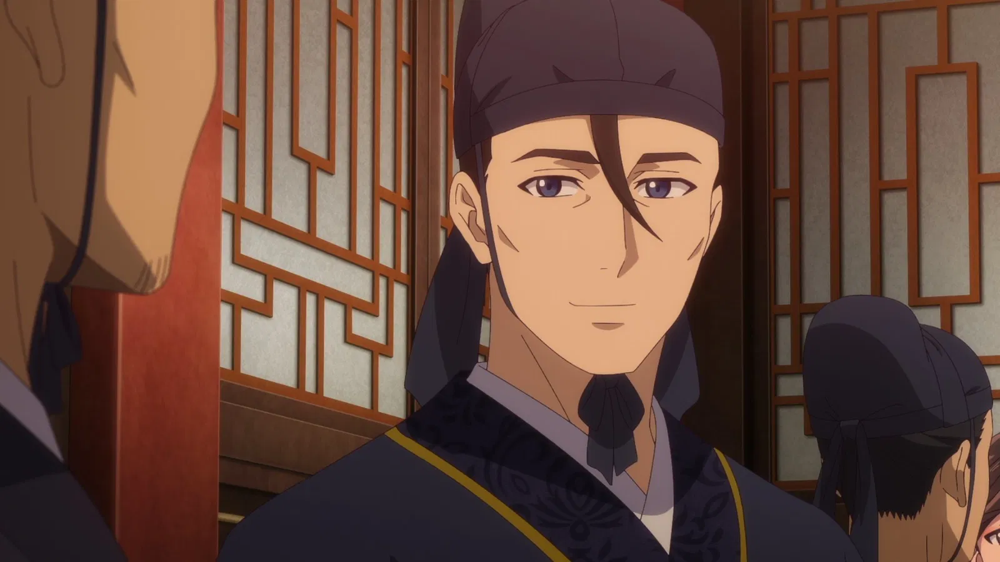
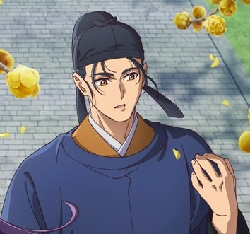
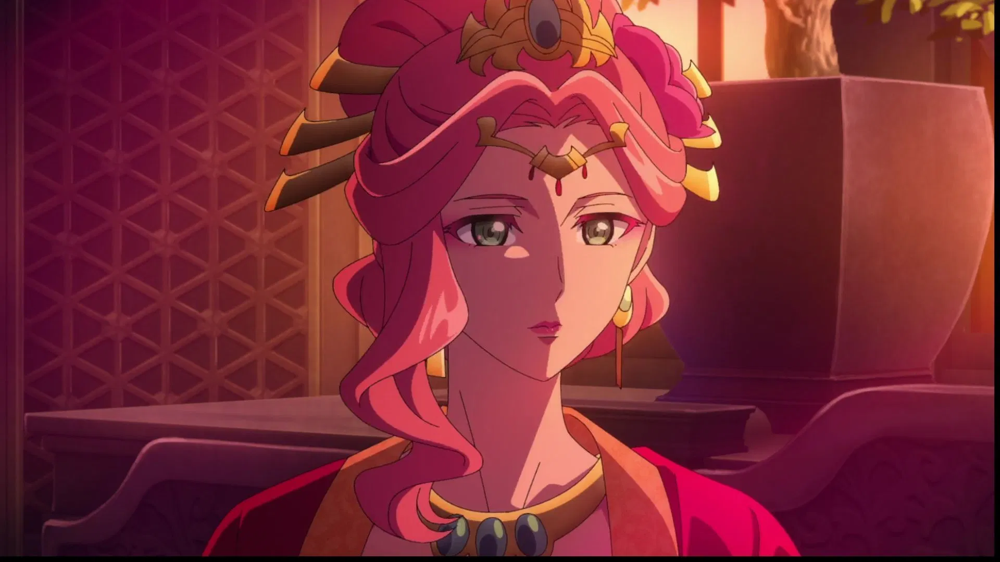
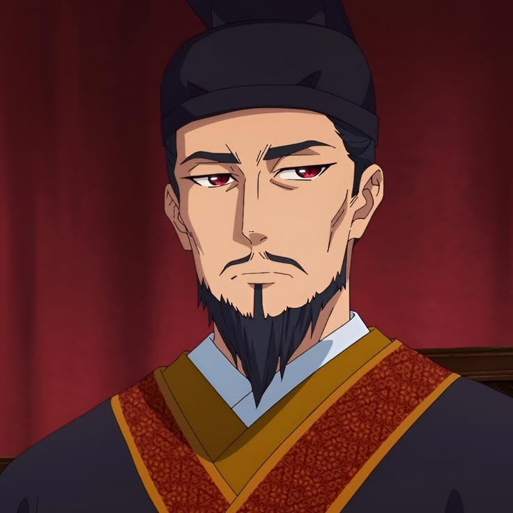
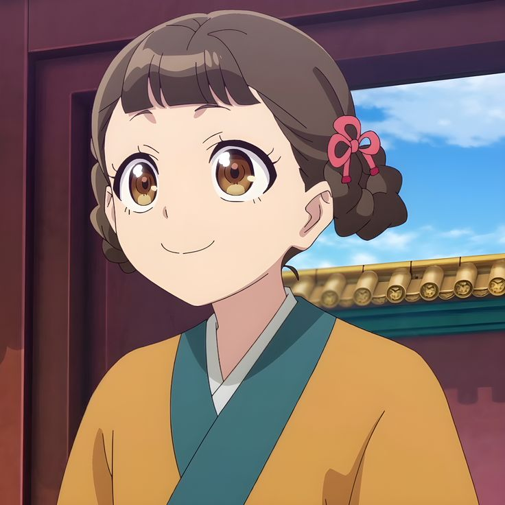
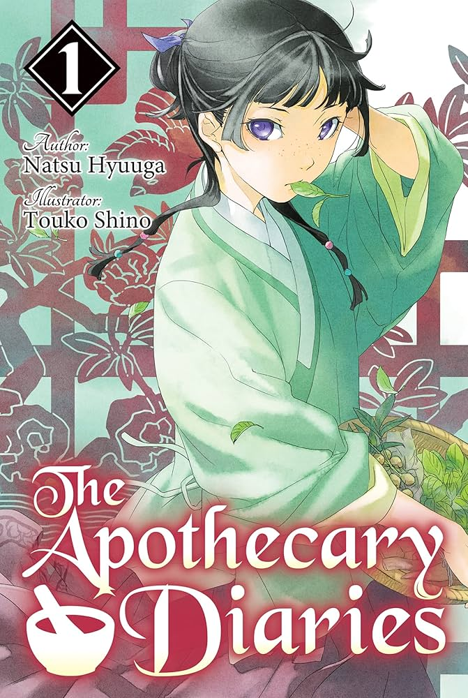
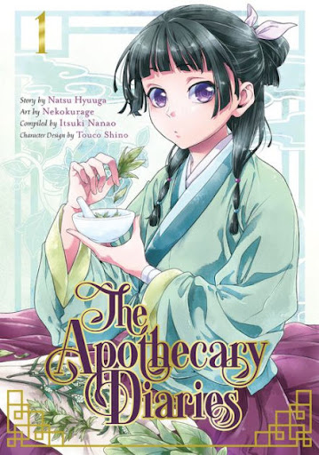
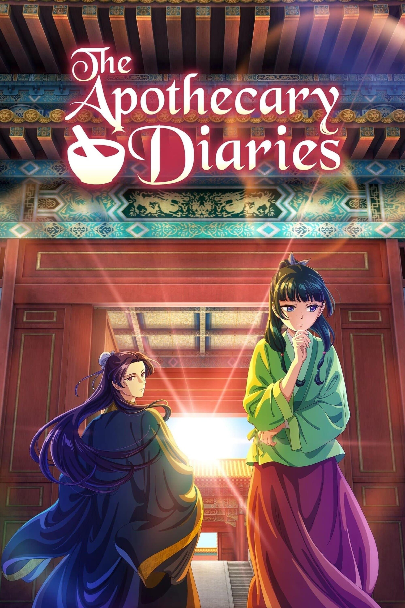

Story Overview
Set in a fictional empire highly reminiscent of historical Ming or Qing dynasty China, the story follows Maomao, a pragmatic and sharp-witted 17-year-old girl. Raised in the red-light district by her apothecary adoptive father, Maomao has developed an extensive, almost obsessive knowledge of medicine, herbs, and poisons. Her ordinary life is upended when she is kidnapped by bandits and sold into indentured servitude as a lowly maid in the Rear Palace, the sprawling complex where the Emperor's concubines reside.
Characters

Maomao

Jinshi

Gaoshun

Basen

Gyokuyuo

Emperor

Xiaolan
Luomen
Historical Context
Set in a fictional empire meticulously modeled after Ming and Qing dynasty China, The Apothecary Diaries grounds its narrative in the rigid social stratification and brutal politics of historical imperial life. The story explores the perilous environment of the Rear Palace, where concubines act as crucial political alliances and powerful eunuchs manage the strict isolation of the emperor's bloodline. Amidst this oppressive hierarchy, the protagonist Maomao uses a blend of traditional Eastern herbalism and early empirical forensics, mirroring historical texts like the Washing Away of Wrongs. By applying practical chemistry and toxicology to palace mysteries, the series offers a gritty, realistic portrayal of how a kidnapped commoner survives the dangers of class divides and deadly court intrigue.
Forms of Media

Light Novel

Manga

Anime
This is the section about forms of media.
Author
Hyūganatsu
Hyūganatsu is a pseudonymous Japanese novelist. Her debut novel and representative work, The Apothecary Diaries, has been adapted into a novel,a light novel series, multiple manga series, and a TV anime.